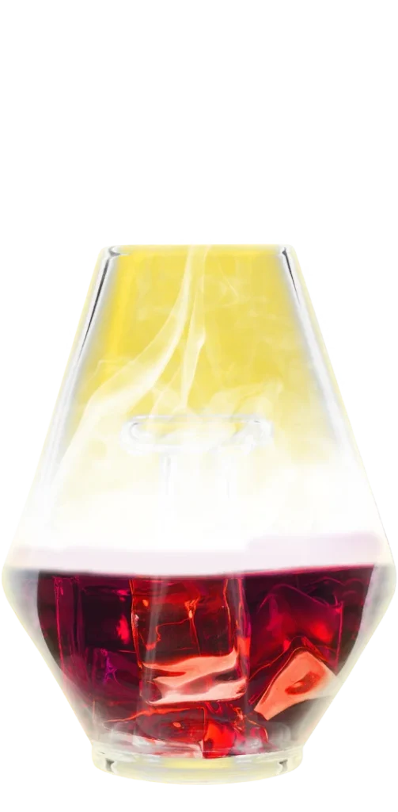
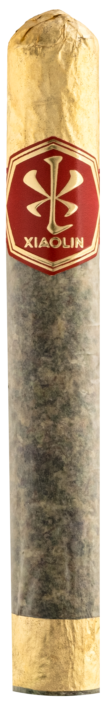

The Xiaolin
Cloud Ritual
We don't sell
a product.
We host a ritual.
Xiaolin was built in the temple tradition — where craft is ceremony and every blend is composed by hand. The Cloud Ritual translates that philosophy into hospitality: paced, guided, sensory, shared.
A category-defining active cloud experience — guests smell, taste, and feel a strain's terpene signature with no THC, no nicotine, and zero compliance risk. Discovery becomes the moment of purchase.
 Rolled Proper · Made in XiaolinThe house signature — a hand-blended collaboration, sealed in gold & the Xiaolin chop.
Rolled Proper · Made in XiaolinThe house signature — a hand-blended collaboration, sealed in gold & the Xiaolin chop.

The ChaliceFaceted diamond vessel · red glass core · gold cloud · turned hardwood base.The Chalice
A diamond-cut vessel of museum-grade glass — a red ember at its heart, a gold cloud rising from it. The centerpiece of every ritual, and the engine of the ecosystem.
- Premium ritual hardware
- Collectible luxury object
- Social technology platform
- Recurring engagement device
Revenue surfaces · Direct-to-consumer · Dispensary sell-through · Accessories & components · Ecosystem expansion
The Cloud Ritual Bar
The architecture that frames the Chalice. LED-lit in red & gold, modular, and deployable from a countertop footprint to a full lounge build — engineered for fast, compliant setup in any licensed environment.
The Cloud Bar supports the Chalice — restrained, architectural, never competing for the eye.
How the experience unfolds
Attraction
Glass, gold light and atmosphere draw the guest in.
Ritual Introduction
A Ritual Guide frames the session and sets the pace.
Sample & Blend
Taste single strains, then mix & layer your own blend — the Xiaolin way.
Cloud Pairing
The terpene signature rises as an active cloud.
Chalice Session
The hero object, experienced first-hand — the moment of belief.
Signature Saved
The guest's blend is captured as a personal profile.
QR Purchase Flow
Frictionless checkout, in-store or to home.
Retail Follow-up
Re-engagement, reorder & ecosystem entry.
Trying is believing —
and once they blend their own, they buy.
Sample.
Then blend your own.
Xiaolin doesn't sell single notes — it composes blends. The Cloud Bar lets every guest do the same: taste strains individually, then mix and layer them into a personal terpene signature, live at the bar.
- Guided single-strain tasting
- Live mixing & layering
- Personal blend, saved to profile
- Mirrors Xiaolin's house cannagars
The blend a guest creates is the product they remember — and the one they re-order.

The House BlendEvery Xiaolin signature is a composition — the Cloud Bar makes the guest the blender.Three tiers of activation
Event Activations
Fully-staffed branded ritual experiences for festivals, launches & partner events. Maximum reach, minimum footprint.
- Turnkey deployment kit
- Ritual Guide staffing
- QR commerce on-site
Semi-Permanent Ritual Bars
Multi-week residencies inside dispensaries & lounges — a recurring destination that builds local ritual culture.
- Modular bar build
- Rotating strain & blend menu
- Retailer co-marketing
Permanent Xiaolin Cloud Bars
Flagship architectural installations — the brand's physical home inside premier retail & hospitality venues.
- Bespoke build-out
- Integrated POS & analytics
- Revenue-share installation
Every tier includes dispensary integration · premium hospitality setup · QR commerce · retailer engagement systems.
Ritual Guides
Not brand ambassadors. Not demo reps. A trained hospitality corps in the lineage of the sommelier, the fragrance consultant, the whisky ambassador, the tea-ceremony host.
Certification transforms staff into commission-driven luxury product ambassadors — the human layer that turns a session into a sale, and a guest into a returning customer.
Hospitality
Reading the room, pacing the session, hosting with warmth and restraint.
Blend Guidance
Coaching guests through tasting, mixing & composing their signature.
Chalice Demonstration
Presenting the hero object with confidence and care.
Sensory Education
Translating terpene language into a guided tasting.
An activation program that pays for itself.
- Already live in 50+ retail doors statewide
- Running pop-ups in-house — generating no activation revenue
- No Cloud Bar — discovery, pairing & blending left on the table
- Can't service all 50 — reach capped by internal staff
- SYPP runs every activation as managed infrastructure — all 50+ doors covered
- Each event becomes a Cloud Ritual & Chalice sales engine
- Chalice sales at activations can offset all — or more — of the cost of engaging SYPP
- Statewide reach with zero added internal headcount
Self-funding activation — the Chalice revenue the program creates can pay for the program itself.
A scalable experiential
commerce ecosystem
Five revenue layers
Chalice Device Sales
Devices, accessories, replacement components & ecosystem expansion. Every activation is a live demo and a customer-acquisition engine.
Ritual Guide Commissions
Per-device commission, performance incentives & event-conversion bonuses — aligning the human layer with premium engagement.
SYPP Infrastructure Participation
For staffing, onboarding, logistics, QR commerce, training, deployment, reporting & cloud pairing — commission per device sold at activations.
Long-Tail Recurring Participation
Trailing commissions, declining residuals & growth-milestone incentives on repeat purchases, referred ecommerce & dispensary reorders.
Dispensary Economics
Hardware sales, larger baskets, event traffic, premium positioning. Future: affiliate participation, sponsored ritual nights, installation revenue-share.
Final economics collaboratively structured.
One self-reinforcing
loop
Each activation sells Chalices. Each Chalice creates a customer. Each customer feeds recurring revenue and referral — funding the next activation.
SYPP's infrastructure is the axle the wheel turns on; the Chalice is the mass that gives it momentum. The more it spins, the faster it spins.
The backbone
already exists
SYPP has deployed custom-branded, LED-lit activation systems across licensed retail — modular hardware, field-rep infrastructure, white-label customization, and compliant rollout at scale.
Made in Xiaolin becomes the flagship evolution of a proven platform — not a prototype, but a premium re-skin of infrastructure already working in the field.
Custom-Branded Modules
Fully wrapped hardware, re-skinned per partner.
LED Activation Architecture
Underlit bases & interactive cloud effect.
Modular Pod Systems
Built-in storage, live demo, 20+ flavor profiles.
White-Label Deployment
Field-rep units, fast compliant setup, anywhere.
Retail Ritual Infrastructure
as a Service
A statewide deployment system — staffing, scheduling, onboarding, commerce & reporting — delivered as managed infrastructure so the brand scales without building operations from scratch.
Outsourced Staffing
Certified Ritual Guides, deployed on demand.
Retailer Onboarding
Standardized rollout & co-marketing playbook.
QR Commerce & Reporting
Unified checkout & per-activation analytics.
Logistics & Scheduling
Event calendar, hardware & pod fulfillment.
Environments
Art-direction concepts — black lacquer, red LED underlighting, gold highlights, cloud atmosphere, the Xiaolin chop. Production renders to follow.
From pilot
to platform
A staged rollout — prove the ritual, certify the guides, integrate the Chalice, then scale statewide.
- Pilot deployment — flagship dispensary
- Onboarding & activation kit
- Ritual Guide certification
- Chalice integration & QR commerce
- Retailer rollout & scheduling
- Statewide expansion